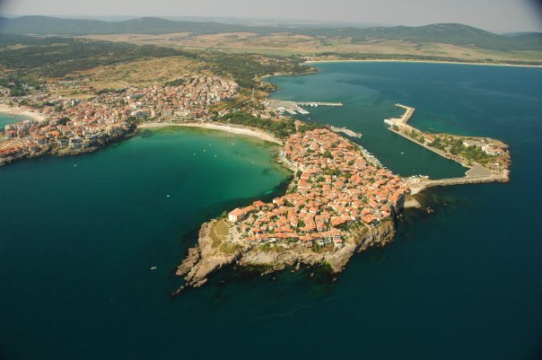
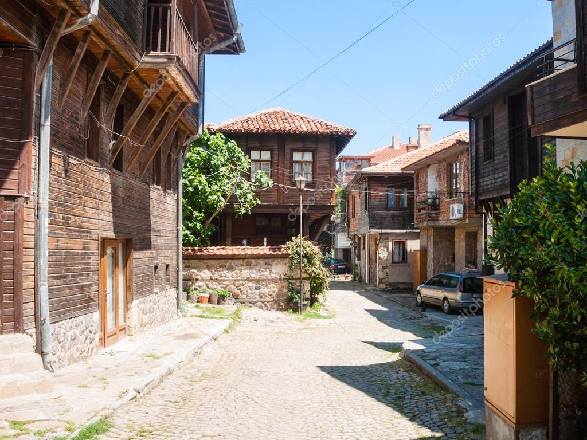
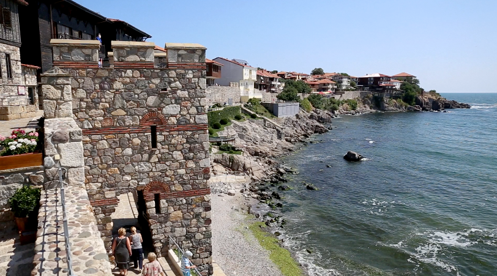
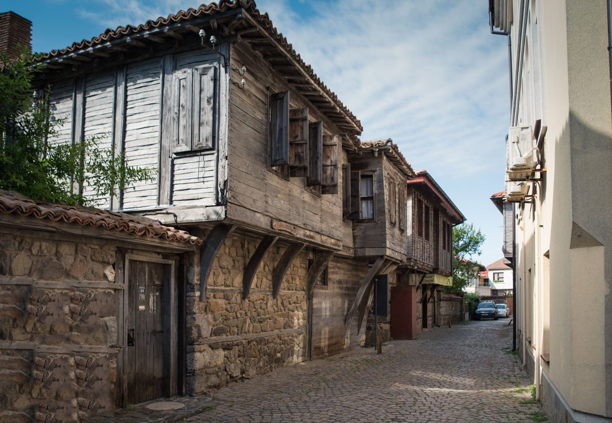
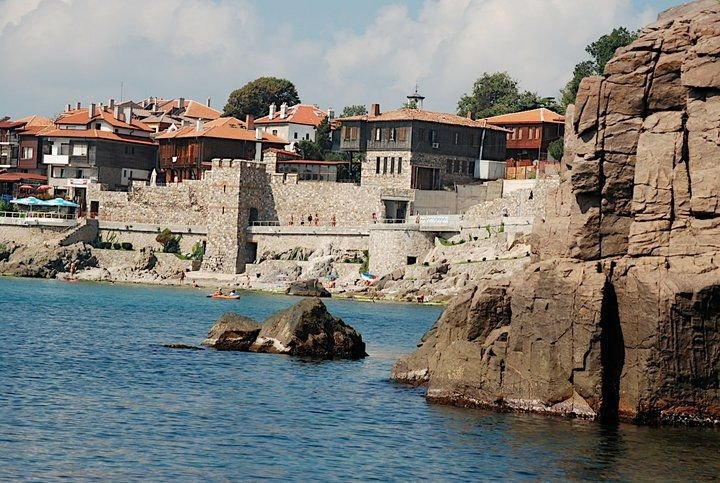
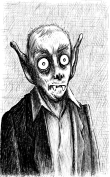

Sozopol
 Sozopol is an ancient seaside town located 35 km south of Burgas on the southern Bulgarian Black Sea Coast. You can go to Sozopol by catamaran from Nessebar and inversely.
Old town
 Sozopol is one of the oldest towns on Bulgarian Thrace's Black Sea coast. The first settlement on the site dates back to the Bronze Age. The town was founded in the 7th century BC by Greek colonists from Miletus as Antheia.
The vampire of Sozopol
 During archaeological excavations in 2012 the remains of a skeleton pierced with an iron bar in the heart were found. It is believed that those are the remains of the local nobleman Krivich (or Krivitsa), ruler of the fortress of Sozopol (castrofilax). Believed to be a very cruel person, the locals made sure that he would not come back to haunt the city after his death by piercing him with an iron bar in the chest.